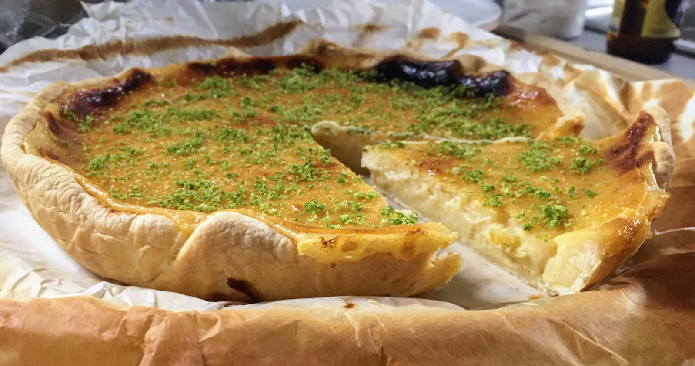

Tarte à l'ananas

Photo par ma sœur chérie ♥
Pour une tarte de taille normale (nourrissant 4 à 6 personnes) :
- Une pâte sablée
- Deux petits ananas bien mûrs et goûteux (sérieusement, ça n'est pas la peine de faire cette recette avec des ananas médiocres, ça ne va avoir aucun goût)
- Un citron vert non traité
- Trois œufs
- Un jaune d'œuf
- 110g de sucre en poudre
- 40g de Maïzena
- 25g de crème liquide allégée
- (facultatif) 70g de sucre en poudre et trois blancs d'œuf, pour la meringue
- Récupérer le zeste du citron vert. Éplucher les ananas, les couper grossièrement, les passer à la centrifugeuse, et ajouter le jus du citron vert. On doit obtenir 250mL de jus. Si on a pas de centrifugeuse, on peut aussi mixer les morceaux d'ananas, et passer la sorte de mousse obtenue à la passoire fine en mélangeant, pour récupérer du jus bien liquide.
- Faire préchauffer le four à 180°C. Mélanger le sucre et la maïzena dans un saladier.
- Étaler la pâte sur un moule, la piquer, et la faire chauffer à blanc pendant une dizaine de minutes pour la faire dorer un peu (on peut ajouter une feuille de papier sulfurisé avec des haricots secs dessus pour éviter que ça gonfle et/ou disposer une couronne de papier alu sur l'intérieur pour éviter que les bords ne se replient).
- Pendant ce temps, battre les œufs et le jaune ensemble, et les incorporer au mélange précédent. Ajouter crème fraîche, bien remélanger.
- Ajouter le mélange sur le fond de tarte, et enfourner pour une quarantaine de minutes.
- Vers la fin de la cuisson, préparer la meringue : monter les blancs en neige ferme avec une pincée de sel, ajouter le sucre et le zeste de citron vert.
- Sortir la tarte du four, augmenter la température à 200°C, disposer la meringue sur la tarte, et la mettre au four une dizaine de minutes en la surveillant bien et en la sortant dès qu'elle est dorée.
- Laisser refroidir, puis mettre au frigo pour que ça prenne.
Remarque : si on ne fait pas de meringue, faire cuire la tarte plutôt une grosse cinquantaine de minutes que 40, et disposer simplement le zeste de citron vert dessus une fois qu'elle est cuite.
Retour à la liste des recettes